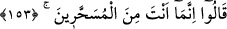
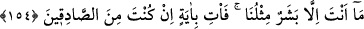

hareket etmeyin).
“Yeryüzünde” yani Hicr diyarında küfür ve zulümle “bozgunculuk yapıp” -bu ifâde
onların aşırı gitmelerinin ne olduğunu açıklamaktadır- îman ve adâletle “dirlik düzenlik
vermeyenler(in sözüyle hareket etmeyin).”
Dirlik düzenlik vermemeleri, ifsadlarının ıslahtan tamamen uzak olduğunu açıklamak
için bozgunculuk yapmalarına atfedilmiştir.
Kastedilen, Sâlih (a.s.)’ı öldürmeye teşebbüs eden birkaç kişidir. Onların kıssası
Neml suresinde anlatılacaktır.
153. Dediler ki: Sen, olsa olsa iyice büyülenmiş birisin!
Semûd kavmi Sâlih (a.s.)’a cevap olarak “Dediler ki: Sen, olsa olsa iyice
büyülenmiş birisin!” yani sen tekrar tekrar sihir yapılıp da aklı gitmiş ve görüşü
bozulmuş kimselerdensin
Tef’îl bâbının binası, fiilin çok işlendiğini göstermek içindir.
154. Sen de ancak bizim gibi bir insansın. Eğer doğru söyleyenlerden isen, haydi
bize bir mucize getir.
“Sen de bizim gibi bir insansın.” Yersin, içersin ve melek değilsin.
Kâşifî der ki: “Sâlih (a.s.)’ın beşer suretinde olması hasebiyle onun hakikati hâlinin
farkında olamadılar ve insan sûretinin ötesinde bir başka şey olduğunu bilmediler.”
Ey sûrete tapan ahmak! Daha ne zamana dek sûret göreceksin
Eğer sûretten kurtulmamışsa, can anlamsız kalır
Sûreti bırak mânâya bak;
Çünkü sadeften maksat incidir
Semûd halkı sûrete bağlı olduklarından ve Sâlih (a.s.)’ı beşer sûretinde
gördüklerinden dolayı şu bahaneyi ileri sürdüler: Sen de bizim gibi beşersin, niçin
risâlet davası güdüyorsun? Eğer bu davayı terk etmezsen ve bu davada ısrarlı isen
“Eğer” iddiânda “doğru söyleyenlerden isen, haydi bize” alışılmışın dışında “bir
mucize getir.”
Sâlih (a.s.): “Siz ne istiyorsunuz?” dedi. Onlar düşünmeden şunu istediler: “Bu taştan
şu şu özellikleri olan bir deve çıkar.” Sâlih(a.s.)’ın duasıyla istedikleri gerçekleşti.”